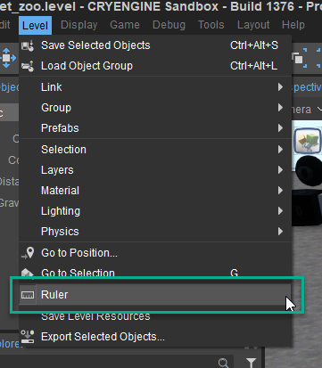
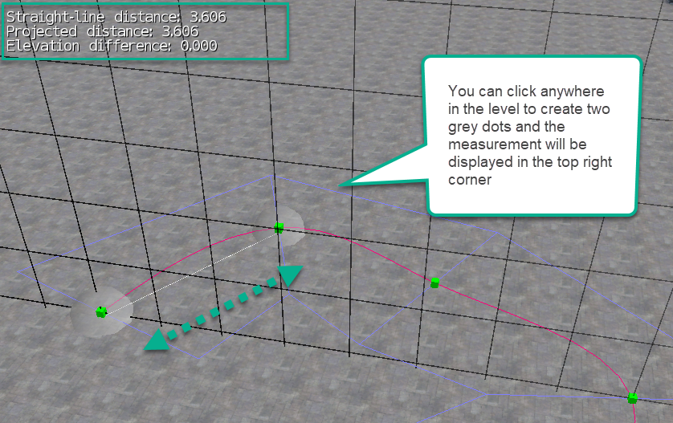

Overview
Sections
The Ruler Tool allows to measure the length of segmented objects like roads, rivers, and paths. Measuring of a segment is done by following the shape of each point. Visually the measured path is shown with a grey line and then has two grey dots for the beginning and end segments.
Sandbox Use
To start measuring a few steps need to be taken:
- Select segmented object.
- Activate "Shape Editing" by clicking "Edit" button, so it becomes green and visible.
- Open Level -> Ruler.
- Click on one segment and then the other to see the debug text and measurement distance in the top left corner of the Perspective Viewport.
To open the Ruler Tool, click on Level -> Ruler:

